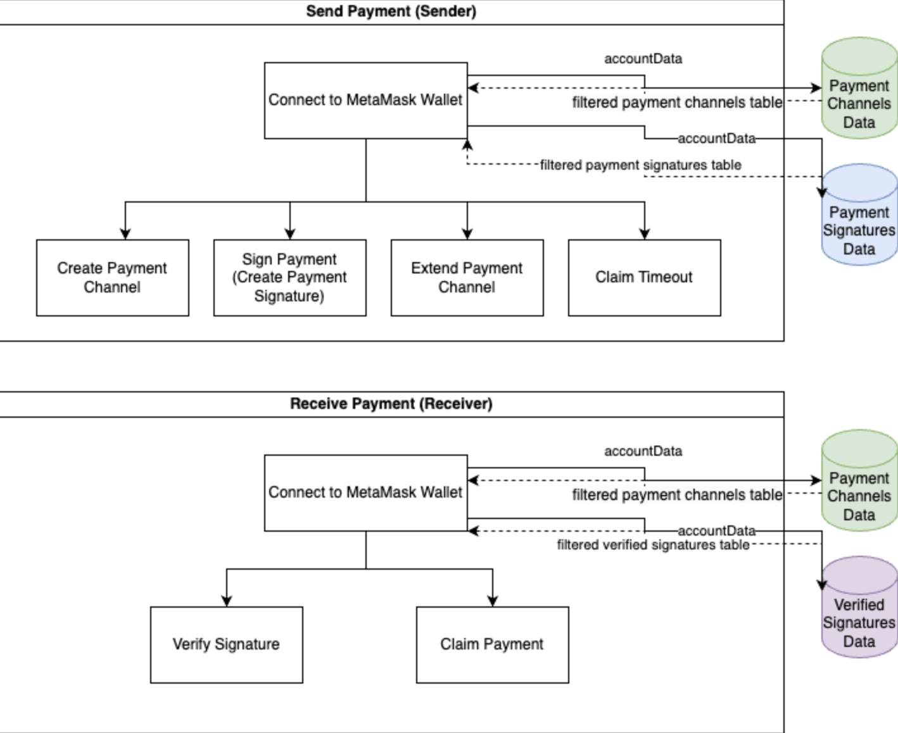

Simplyfing Current Decentralized Micropayment Channels
Introduction
Ethereum has allowed people to make payments of Ether on a decentralized network. However, one of the main drawbacks of sending payments through Ethereum are gas fees. As adoption of Ethereum grows, the need to minimize gas fees is important for the user's experience. One solution is to create a payment channel, which will allow a sender to make continuous payments to a receiver within a predefined time period but only requiring a single transaction fee from both parties: one for opening the payment channel by the sender and another for closing the payment channel by the receiver. One current approach to setting up and using this requires five separate applications to work: MetaMask, Solidity code, Remix IDE, Sepolia Etherscan, and Javascript. However, this overly complicates the process. In this project, we condense the functionalities of four of the five applications, namely Solidity code, Remix IDE, Sepolia Etherscan, and JavaScript, required to create and use a payment channel into a single decentralized application, which reduces the number of applications required to just two: MetaMask and this decentralized application. In other words, we successfully created a decentralized application that along with MetaMask can create and interact with payment channels on the Sepolia Testnet.
Methods
MetaMask
MetaMask is an Ethereum wallet that allows users to store Ether (Ethereum’s native cryptocurrency) and interact with the Ethereum network. Furthermore, users can store testnet Ether and interact with Ethereum testnets through MetaMask.
In this decentralized application, only use Sepolia Ether and the Sepolia Testnet, and MetaMask is essentially your account that allows you to deploy payment channels, interact with deployed payment channels, and create payment signatures through this decentralized application.
Sepolia Testnet
The Sepolia Testnet is similar to the Ethereum network, except it uses testnet Ether. Sepolia Ether has no real world value unlike Ether.
Solidity
Solidity is one of the main programming languages used for creating smart contracts in Ethereum and Ethereum testnets. In this decentralized application, Solidity was used to create the payment channel smart contract.
Frontend
HTML: Is used to create the layout of the user interface for this decentralized application.
CSS: Is used to design and style the user interface for this decentralized application.
React.js & Next.js: Is a JavaScript library and framework for creating user interfaces.
Client Side Code
JavaScript: Is used to add functionality to this decentralized application.
- Connecting to MetaMask.
- Deploying payment channels to the Sepolia Testnet.
- Interacting with deployed payment channels in the Sepolia Testnet.
- Creating and verifying payment signatures.
- Viewing databases with relevant information about ongoing payment channels and payment signatures.
Ethers.js: Is a package imported inside the client side JavaScript code in order to interact with a deployed smart contract in the Sepolia Testnet from the frontend of this decentralized application.
Backend Code
The local backend server is responsible for getting information from the client side code and processing the information and sending back one of the following things …
- The necessary information to deploy a payment channel to the Sepolia Testnet directly from the frontend.
- The necessary information to create a payment signature.
- The verification results of a payment signature.
It is also responsible for logging information into the database for users to view in a separate web page.
This was accomplished using the following tools.
Node.js: Is used to allow JavaScript to be run in the backend server to process the information sent from the client side code.
Express.js: Is used as the backend framework and is responsible for communicating between the backend server and client side code.
Solc: Is an npm package that compiles the Solidity code for a payment channel into bytecode.
Web3: Is an npm package that encodes the constructor parameters for a payment channel into bytecode.
Ethereumjs-abi & Ethereumjs-util: Are npm packages used to verify payment signatures.
While Express.js was used as the local backend server with JSON files as the database, they were eventually replaced by Next.js and Supabase.
Details and Framework
Q: In this context, what is a payment channel?
A: A physical check requires a sender to write who they want to pay, how much they want to pay, and a signature of approval. Once this physical check is given to the intended receiver, the sender can no longer update any of those three parameters. The receiver can hold on to this physical check for a set period of time, usually determined by the financial institution, and the receiver can cash in the check anytime within that time frame. If the receiver does not cash it in within the time frame allotted, the check is void, and the sender does not lose any money. In this context, a payment channel is like a digital check. In this digital check, the sender sets who they want to pay, and this can not be changed after it has been set. However, in this case, the sender can continuously update the payment amount of this digital check by creating new digital signatures that guarantees a certain amount set by the sender can be withdrawn by the receiver any time within an allotted time frame, which is further explained below. If the receiver does not cash it in within the time frame allotted, the digital check can be voided by the sender: i.e. the sender can take back their promised payment, which is further explained below. However, unlike most physical checks, there is a one time payment by the sender to initiate the digital check, and there is a one time payment by the receiver to withdraw from the digital check using a digital signature.
High Level View of Application Framework:

Sender Actions
1. Sender can create a payment channel by …
- Escrowing a certain amount of Sepolia Ether.
- Entering the recipient’s address.
- Entering an expiration.
Note: This action costs Sepolia Ether.
For the duration of this payment channel, the sender can only make cumulative payments less than or equal to the amount escrowed.
If the expiration date passes and the receiver has not claimed their payment, the sender can withdraw all the amount escrowed from a payment channel by “claiming a timeout,” which voids any payment signatures they sent to the receiver.
2. Sender can create a payment signature by …
- Entering a payment channel’s contract address.
- Entering the cumulative amount to promise to pay to the set recipient’s address.
Note: This action does not cost Sepolia Ether.
The payment signature, contract address, cumulative amount, and sender address should be sent to the receiver off-chain: e.g. e-mail.
3. Sender can extend a payment channel’s expiration by …
- Entering a payment channel’s contract address.
- Entering the new expiration (must be greater than the current expiration’s Unix timestamp).
Note: This action costs Sepolia Ether.
4. Sender can claim a timeout if the expiration date has passed by ..
- Entering a payment channel’s contract address.
Note: This action costs Sepolia Ether.
Reciever Actions
1. Receiver can verify a payment signature by …
- Entering a payment channel’s contract address.
- Entering the expected payment amount.
- Entering the payment signature.
- Entering the sender’s address.
Note: This action does not cost Sepolia Ether.
2. Receiver can claim a payment signature by …
- Entering a payment channel’s contract address.
- Entering the expected payment amount.
- Entering the payment signature.
Note: This action costs Sepolia Ether.
Notice that during the duration of a payment channel, a receiver will likely receive multiple payment signatures, where each successive payment signature is likely for a higher cumulative payment amount. In most cases, the receiver should cash out the payment signature with the highest cumulative payment amount.
Conclusions
In this project, we successfully created a decentralized application that along with MetaMask can …
- Connect to MetaMask
- Deploy payment channels to the Sepolia Testnet
- Interact with deployed payment channels in the Sepolia Testnet
- Create and verifying payment signatures
- View databases with relevant information about ongoing payment channels and payment signatures
… all in a single decentralized application.
However, it is currently limited as a one-way payment channel, where a sender can only send but not receive and a receiver can only receive but not send. Future improvements to this payment channel should create a two-way payment channel, where both people can send and receive, and update the decentralized application accordingly.
This application is also limited by using the Sepolia Testnet. Future implementations require more rigorous thinking about potential bugs and testing along with subsequent fixes if required before transitioning this application from the Sepolia Testnet to the Ethereum mainnet. This statement also extends to the Solidity code used for the payment channel smart contract. This code is from Solidity by Example’s section on micropayment channels. This code requires more rigorous thinking about potential bugs and testing along with subsequent fixes if required before transitioning this application from the Sepolia Testnet to the Ethereum mainnet.